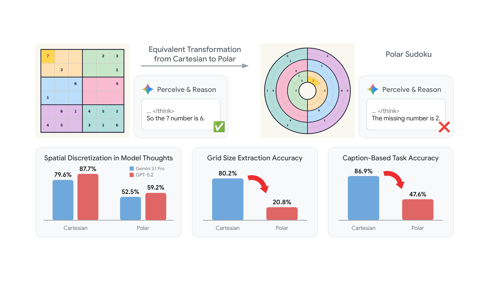
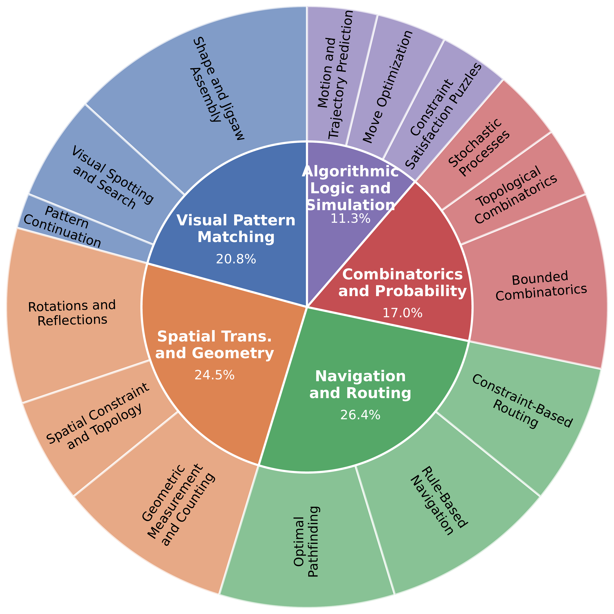
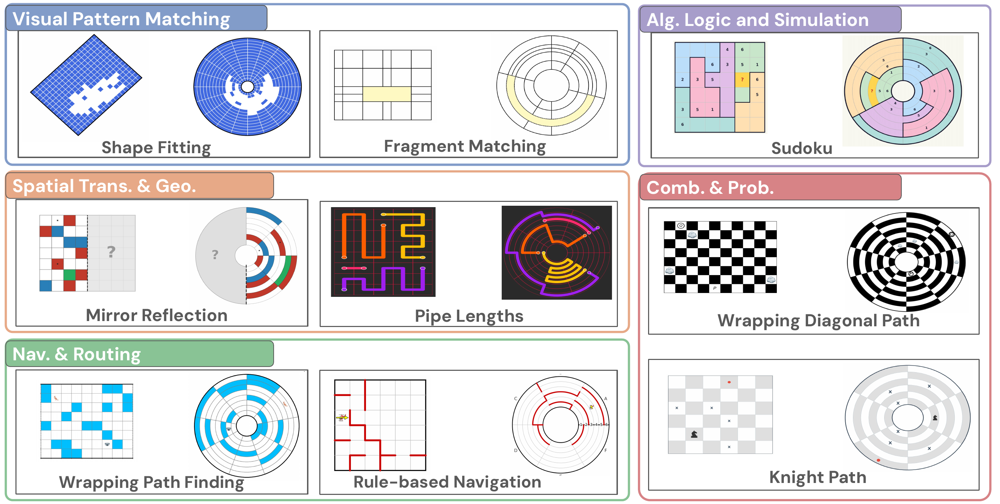
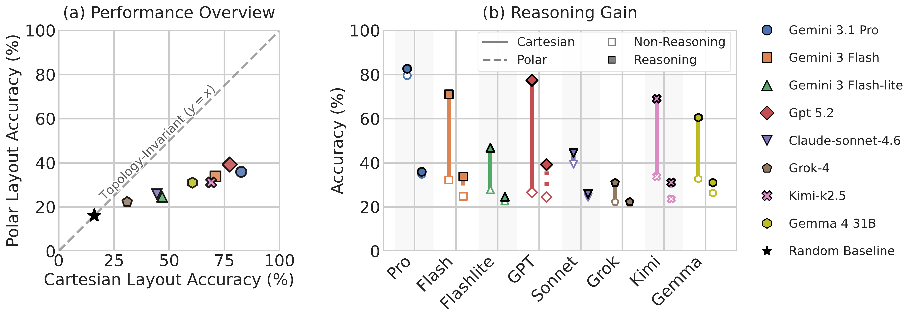
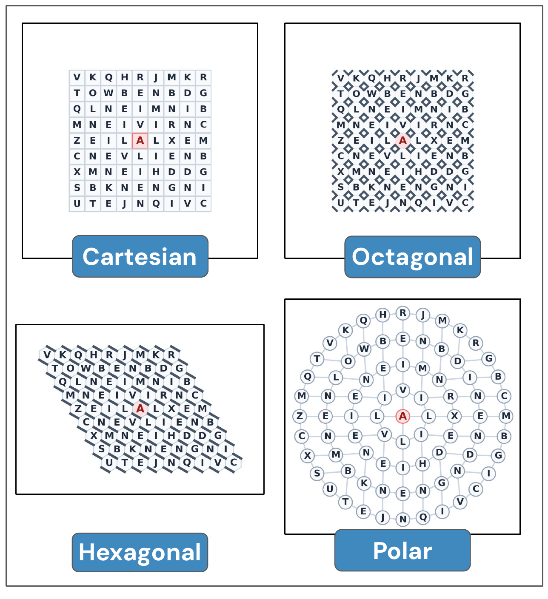
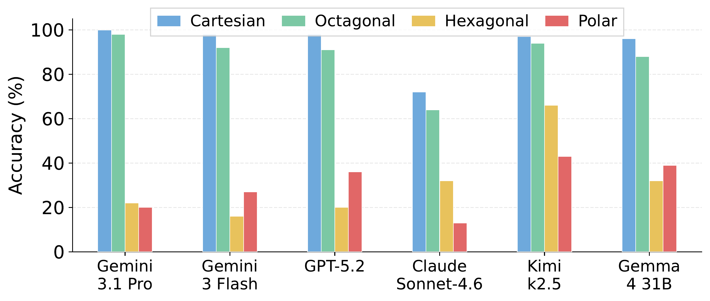

Abstract
As current Multimodal Large Language Models rapidly saturate canonical visual reasoning benchmarks, a key question emerges: do these strong scores genuinely reflect robust visual understanding? We identify a pervasive vulnerability, the Cartesian Shortcut: visual reasoning benchmarks prevalently build on orthogonal grid-based layouts that can be readily discretized into explicit textual coordinates. Models systematically exploit this property, heavily leveraging text-based deductive reasoning to assist visual problem-solving.
To systematically dismantle this shortcut, we introduce Polaris-Bench, which re-formulates 53 visual reasoning tasks in Polar coordinate space with paired Cartesian counterparts as reference, while preserving consistent logical constraints and task semantics, fundamentally breaking the orthogonal prior that models exploit. Comprehensive evaluation across 14 state-of-the-art MLLMs reveals that frontier models achieving 70–83% on Cartesian layouts collapse to 31–39% on Polar equivalents, with degradation persisting even under complete logical equivalence. Moreover, reasoning gains observed on Cartesian layouts are severely diminished on Polar equivalents. These findings expose a critical deficiency in current MLLMs: the lack of topology-invariant visual reasoning.

The Cartesian Shortcut
When evaluated on grid-based visual tasks such as Sudoku, maze navigation, or graph coloring, state-of-the-art multimodal LLMs don't actually "see" the image as a visual structure. Instead, they systematically discretize the orthogonal grid layout into textual coordinates (e.g., "Row 3, Column 4"), converting what should be a visual reasoning problem into a text manipulation exercise. We call this behavior the Cartesian Shortcut.
We analyze over 3,800 reasoning traces produced by frontier models across 9 established visual reasoning benchmarks. Models explicitly invoke grid coordinates in over 56% of their Chain-of-Thought responses; on certain tasks, Gemini-3.1 Pro and GPT-5.2 invoke spatial discretization in 79.6% and 87.7% of traces, respectively. This confirms that high accuracy on Cartesian grid benchmarks is substantially inflated by text-based coordinate deduction rather than genuine visual understanding.
Polaris-Bench
To rigorously test whether models can reason about visual structure independently of grid coordinates, we introduce Polaris-Bench, a benchmark that re-formulates 53 visual reasoning tasks in Polar coordinate space, each paired with a topologically equivalent Cartesian counterpart.
Polar grids preserve the same structural relationships (adjacency, containment, connectivity) as Cartesian grids, but their curved, non-orthogonal layout makes coordinate-based text strategies ineffective. If a model truly understands the visual structure, its performance should remain consistent across coordinate systems. If it relies on the Cartesian Shortcut, its performance will collapse.

5 categories, 53 tasks.

Representative examples for each of the five core taxonomies in Polaris-Bench.
Key Findings
We evaluate 14 state-of-the-art MLLMs on Polaris-Bench, including Gemini-3.1 Pro, GPT-5.2, Claude Sonnet 4.6, and open-weight models like Qwen3.5-397B and Gemma-4. If the Cartesian Shortcut hypothesis is correct, we should observe a dramatic performance drop when models are forced to reason in Polar space where coordinate-based text strategies no longer work.
The results confirm exactly this. As shown below (left), every evaluated model falls far below the topological invariance diagonal: Cartesian accuracy spans 19-83%, but Polar accuracy compresses into a narrow 19-39% band regardless of model capability, revealing a shared performance floor. Furthermore (right), reasoning mode gains that are substantial on Cartesian tasks (up to +50.8 pts for GPT-5.2) collapse to near zero on Polar, demonstrating that extended Chain-of-Thought reasoning primarily amplifies the Cartesian Shortcut rather than improving genuine visual understanding.

Does the Performance Collapse Generalize Beyond Polar?
To verify that the performance collapse is not an artifact of Polar coordinates specifically, we evaluate models on intermediate coordinate systems (Octagonal, Hexagonal) that progressively deviate from the orthogonal Cartesian layout. The results show a clear gradient: accuracy remains high on Cartesian and Octagonal (which still has near-orthogonal structure), then drops sharply on Hexagonal and Polar, confirming that the collapse tracks how far the layout deviates from the orthogonal grid that enables coordinate-based text strategies.

Word Search in Cartesian, Octagonal, Hexagonal, and Polar coordinates.

Sudoku accuracy across 4 coordinate systems. The drop tracks deviation from orthogonal grid structure.
Leaderboard
High reasoning mode. C = Cartesian, P = Polar accuracy (%). Δ = C→P drop. Click column headers to sort.
Task Examples
Paired Cartesian and Polar evaluation instances across 20 representative benchmark tasks.
Getting Started
Load via HuggingFace datasets. Evaluation scripts on GitHub.
from datasets import load_dataset ds = load_dataset("google/polaris-bench", split="test") s = ds[0] print(s["task"], s["question_type"]) print(s["question"]) s["image"].show()
Citation
@misc{hu2026cartesianshortcutreevaluatevision,
title = {The Cartesian Shortcut:
Re-evaluate Vision Reasoning
in Polar Coordinate Space},
author = {Xia Hu and Zhenrui Yue
and Brian Potetz and Howard Zhou
and Leonidas Guibas and Chun-Ta Lu
and Zhicheng Wang},
year = {2026},
eprint = {2605.09883},
archivePrefix = {arXiv},
primaryClass = {cs.CV},
url = {https://arxiv.org/abs/2605.09883}
}